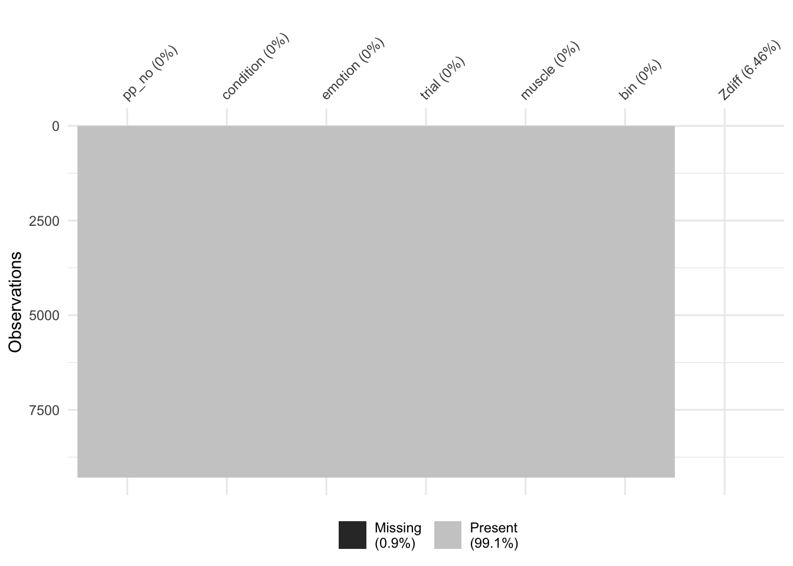

Last updated: 2020-09-16
Checks: 7 0
Knit directory: dynamicRFM/
This reproducible R Markdown analysis was created with workflowr (version 1.6.2). The Checks tab describes the reproducibility checks that were applied when the results were created. The Past versions tab lists the development history.
Great! Since the R Markdown file has been committed to the Git repository, you know the exact version of the code that produced these results.
Great job! The global environment was empty. Objects defined in the global environment can affect the analysis in your R Markdown file in unknown ways. For reproduciblity it’s best to always run the code in an empty environment.
The command set.seed(20200901) was run prior to running the code in the R Markdown file. Setting a seed ensures that any results that rely on randomness, e.g. subsampling or permutations, are reproducible.
Great job! Recording the operating system, R version, and package versions is critical for reproducibility.
Nice! There were no cached chunks for this analysis, so you can be confident that you successfully produced the results during this run.
Great job! Using relative paths to the files within your workflowr project makes it easier to run your code on other machines.
Great! You are using Git for version control. Tracking code development and connecting the code version to the results is critical for reproducibility.
The results in this page were generated with repository version 12b577b. See the Past versions tab to see a history of the changes made to the R Markdown and HTML files.
Note that you need to be careful to ensure that all relevant files for the analysis have been committed to Git prior to generating the results (you can use wflow_publish or wflow_git_commit). workflowr only checks the R Markdown file, but you know if there are other scripts or data files that it depends on. Below is the status of the Git repository when the results were generated:
Ignored files:
Ignored: .DS_Store
Ignored: .Rproj.user/
Ignored: data/.DS_Store
Untracked files:
Untracked: analysis/clean_write_function.R
Untracked: data/Amy_raw/
Untracked: data/clean/
Untracked: data/combined/
Untracked: data/dirty/
Untracked: output/tog_sep.png
Untracked: resources/
Untracked: scripts/
Untracked: site_libs/
Note that any generated files, e.g. HTML, png, CSS, etc., are not included in this status report because it is ok for generated content to have uncommitted changes.
These are the previous versions of the repository in which changes were made to the R Markdown (analysis/4.5_calculating_zscores_test.Rmd) and HTML (docs/4.5_calculating_zscores_test.html) files. If you’ve configured a remote Git repository (see ?wflow_git_remote), click on the hyperlinks in the table below to view the files as they were in that past version.
| File | Version | Author | Date | Message |
|---|---|---|---|---|
| Rmd | 12b577b | Your Name | 2020-09-16 | z check code |
https://rpubs.com/jenrichmond/emgz
library(tidyverse)
library(here)
library(skimr)
options(scipen = 999) #set no scientific notationNormally, to center a variable, you would subtract the mean of all data points from each individual data point. With scale(), this can be accomplished in one simple call.
Center variable A using the scale() function
scale(A, center = TRUE, scale = FALSE)
You can generate z-scores for variable A using the scale() function
scale(A, center = TRUE, scale = TRUE)
data <- read_csv(here("data", "combined", "2_clean_no_bl_outliers.csv"))In Sophie’s analysis she separated her data into baseline and bins and calculated z scores separately before joining them back together. For Sahar and Riley’s analysis, we have calcualted z scores with baseline and bins together.
This rmd tests whether separate or togehter makes any difference to the distribution of z scores.
NOTE all dataframes created from the together process have a “t” in front, all df created via the separate process have a “s” in front, to allow for comparisons
tpp403 <- data %>%
filter(pp_no == "pp403")
# make it wide
twidepp403 <- tpp403 %>%
pivot_wider(names_from = muscle, values_from = rms)
# create new variables called zbrow and zcheek using the scale function and specifying center = TRUE and scale = TRUE
twidepp403$zbrow = scale(twidepp403$brow, center = TRUE, scale = TRUE)
twidepp403$zcheek = scale(twidepp403$cheek, center = TRUE, scale = TRUE)
# Check that the mean of the new zbrow and zcheek columns is 0 - this is what we want...
summary(twidepp403) pp_no condition emotion bin
Length:210 Length:210 Min. :626.0 Length:210
Class :character Class :character 1st Qu.:626.0 Class :character
Mode :character Mode :character Median :727.0 Mode :character
Mean :770.8
3rd Qu.:828.0
Max. :929.0
bin_no trial brow cheek
Min. :0 Length:210 Min. : 3.382 Min. : 2.934
1st Qu.:1 Class :character 1st Qu.: 5.577 1st Qu.: 3.673
Median :3 Mode :character Median : 7.280 Median : 4.241
Mean :3 Mean : 8.506 Mean : 6.801
3rd Qu.:5 3rd Qu.: 9.325 3rd Qu.: 5.708
Max. :6 Max. :66.192 Max. :120.989
NA's :7 NA's :7
zbrow.V1 zcheek.V1
Min. :-0.818495 Min. :-0.380274
1st Qu.:-0.467962 1st Qu.:-0.307551
Median :-0.195849 Median :-0.251692
Mean : 0.000000 Mean : 0.000000
3rd Qu.: 0.130802 3rd Qu.:-0.107447
Max. : 9.215078 Max. :11.227675
NA's :7 NA's :7 make data wide, use mutate to make new z variables
tdata_zscore <- data %>%
pivot_wider(names_from = muscle,
values_from = rms) %>%
group_by(pp_no) %>%
mutate(Zbrow = scale(brow, center = TRUE, scale = TRUE)) %>%
mutate(Zcheek = scale(cheek, center = TRUE, scale = TRUE))
summary(tdata_zscore) pp_no condition emotion bin
Length:10836 Length:10836 Min. :626.0 Length:10836
Class :character Class :character 1st Qu.:701.8 Class :character
Mode :character Mode :character Median :727.0 Mode :character
Mean :776.7
3rd Qu.:828.0
Max. :929.0
bin_no trial brow cheek
Min. :0 Length:10836 Min. : 0.7779 Min. : 1.504
1st Qu.:1 Class :character 1st Qu.: 4.4947 1st Qu.: 3.621
Median :3 Mode :character Median : 7.2542 Median : 5.139
Mean :3 Mean : 9.6268 Mean : 10.168
3rd Qu.:5 3rd Qu.: 11.0048 3rd Qu.: 9.662
Max. :6 Max. :220.8444 Max. :176.645
NA's :700 NA's :924
Zbrow.V1 Zcheek.V1
Min. :-2.9500 Min. :-1.3829
1st Qu.:-0.5080 1st Qu.:-0.5146
Median :-0.2471 Median :-0.2893
Mean : 0.0000 Mean : 0.0000
3rd Qu.: 0.2121 3rd Qu.: 0.1066
Max. :13.5634 Max. :11.2277
NA's :700 NA's :924 note: can also make new z-variables manually:
data_z_manual <- data_wide %>% group_by(pp_no) %>% mutate(Zbrow = (brow - mean(brow))/sd(brow)) %>% mutate(Zcheek = (cheek - mean(cheek))/sd(cheek))
Need to calculate difference scores from baseline. Need to make BIN wide to allow for calculations across columns. Its a bit difficult to do that for both muscles at the same time, so lets separate and work out the difference scores for brow and cheek separately.
Just to make things easier to join back together later
tbrow_z <- tdata_zscore %>%
mutate(muscle = "brow") %>%
select(pp_no, condition, emotion, bin, trial, muscle, Zbrow) … and rename bin_0 as BL (i.e. baseline)
tbrow_z_wide <- tbrow_z %>%
pivot_wider(names_from = bin,
values_from = Zbrow) %>%
rename(BL = bin_0)Use wide columns to calcuate the difference between each bin column and BL, creating a new set of columns starting with “diff”, drop BL column and all columns starting with bin (i.e. raw z scores).
note - This df contains for each bin the difference between stimulus and basline, so POSITIVE difference scores = greater activity during STIM than BL and NEGATIVE difference scores = greater activity during BL than STIM
tbrow_z_diff <- tbrow_z_wide %>%
mutate(diff_bin1 = bin_1 - BL,
diff_bin2 = bin_2 - BL,
diff_bin3 = bin_3- BL,
diff_bin4 = bin_4 - BL,
diff_bin5 = bin_5 - BL,
diff_bin6 = bin_6 - BL) %>%
select(-BL, - starts_with("bin"))tbrow_z_diff_long <- tbrow_z_diff %>%
pivot_longer(names_to = "bin",
values_to = "Zdiff",
diff_bin1:diff_bin6)library(naniar)
Attaching package: 'naniar'The following object is masked from 'package:skimr':
n_completevis_miss(tbrow_z_diff_long)Warning: Removed 9288 rows containing missing values (geom_raster).
…to make things easier to join back together later
tcheek_z <- tdata_zscore %>%
mutate(muscle = "cheek") %>%
select(pp_no, condition, emotion, bin, trial, muscle, Zcheek) …and rename bin_0 as BL (i.e. baseline)
tcheek_z_wide <- tcheek_z %>%
pivot_wider(names_from = bin,
values_from = Zcheek) %>%
rename(BL = bin_0)note - This df contains for each bin the difference between stimulus and basline, so POSITIVE difference scores = greater activity during STIM than BL and NEGATIVE difference scores = greater activity during BL than STIM
tcheek_z_diff <- tcheek_z_wide %>%
mutate(diff_bin1 = bin_1 - BL,
diff_bin2 = bin_2 - BL,
diff_bin3 = bin_3- BL,
diff_bin4 = bin_4 - BL,
diff_bin5 = bin_5 - BL,
diff_bin6 = bin_6 - BL) %>%
select(-BL, - starts_with("bin"))tcheek_z_diff_long <- tcheek_z_diff %>%
pivot_longer(names_to = "bin",
values_to = "Zdiff",
diff_bin1:diff_bin6)tzdiff_cheek_brow <- bind_rows(tcheek_z_diff_long, tbrow_z_diff_long) %>%
arrange(pp_no, emotion, trial, muscle, bin)tzdiff_cheek_brow %>%
group_by(muscle, emotion) %>%
summarise(meanZdiff = mean(Zdiff, na.rm= TRUE),
sdZdiff = sd(Zdiff, na.rm=TRUE))`summarise()` regrouping output by 'muscle' (override with `.groups` argument)# A tibble: 8 x 4
# Groups: muscle [2]
muscle emotion meanZdiff sdZdiff
<chr> <dbl> <dbl> <dbl>
1 brow 626 -0.00705 0.877
2 brow 727 0.326 1.16
3 brow 828 0.224 1.01
4 brow 929 0.296 1.02
5 cheek 626 0.451 1.17
6 cheek 727 0.209 0.970
7 cheek 828 0.269 1.07
8 cheek 929 0.195 0.915tog_plot <- tzdiff_cheek_brow %>%
ggplot(aes(x = bin, y = Zdiff)) +
geom_jitter() +
facet_grid(vars(muscle), vars(emotion)) +
labs(title = "Zdiff bl and bin together")tzdiff_cheek_brow %>%
write_csv(here("data", "combined", "t4_zdiff_clean.csv"))
beepr::beep(1)data <- read_csv(here("data", "combined", "2_clean_no_bl_outliers.csv"))spp403 <- data %>%
filter(pp_no == "pp403")
# make it wide
swidepp403 <- spp403 %>%
pivot_wider(names_from = muscle, values_from = rms)
# filter for bl and bin
swidepp403_bl <- swidepp403 %>%
filter(bin == "bin_0")
swidepp403_bin <- swidepp403 %>%
filter(bin != "bin_0")
# for bl and bins separately, create new variables called zbrow and zcheek using the scale function and specifying center = TRUE and scale = TRUE
# bl first
swidepp403_bl$zbrow = scale(swidepp403_bl$brow, center = TRUE, scale = TRUE)
swidepp403_bl$zcheek = scale(swidepp403_bl$cheek, center = TRUE, scale = TRUE)
# bin next
swidepp403_bin$zbrow = scale(swidepp403_bin$brow, center = TRUE, scale = TRUE)
swidepp403_bin$zcheek = scale(swidepp403_bin$cheek, center = TRUE, scale = TRUE)
# Check that the mean of the new zbrow and zcheek columns is 0 - this is what we want...
summary(swidepp403_bl) pp_no condition emotion bin
Length:30 Length:30 Min. :626.0 Length:30
Class :character Class :character 1st Qu.:651.2 Class :character
Mode :character Mode :character Median :727.0 Mode :character
Mean :770.8
3rd Qu.:828.0
Max. :929.0
bin_no trial brow cheek
Min. :0 Length:30 Min. : 3.382 Min. : 3.138
1st Qu.:0 Class :character 1st Qu.: 5.165 1st Qu.: 3.625
Median :0 Mode :character Median : 6.330 Median : 4.035
Mean :0 Mean : 7.047 Mean : 4.991
3rd Qu.:0 3rd Qu.: 8.070 3rd Qu.: 4.902
Max. :0 Max. :15.995 Max. :15.754
NA's :1 NA's :1
zbrow.V1 zcheek.V1
Min. :-1.309105 Min. :-0.621908
1st Qu.:-0.672190 1st Qu.:-0.458622
Median :-0.256225 Median :-0.321007
Mean : 0.000000 Mean : 0.000000
3rd Qu.: 0.365507 3rd Qu.:-0.030174
Max. : 3.196562 Max. : 3.611466
NA's :1 NA's :1 summary(swidepp403_bin) pp_no condition emotion bin
Length:180 Length:180 Min. :626.0 Length:180
Class :character Class :character 1st Qu.:626.0 Class :character
Mode :character Mode :character Median :727.0 Mode :character
Mean :770.8
3rd Qu.:828.0
Max. :929.0
bin_no trial brow cheek
Min. :1.0 Length:180 Min. : 3.746 Min. : 2.934
1st Qu.:2.0 Class :character 1st Qu.: 5.716 1st Qu.: 3.691
Median :3.5 Mode :character Median : 7.482 Median : 4.298
Mean :3.5 Mean : 8.749 Mean : 7.103
3rd Qu.:5.0 3rd Qu.: 9.668 3rd Qu.: 6.143
Max. :6.0 Max. :66.192 Max. :120.989
NA's :6 NA's :6
zbrow.V1 zcheek.V1
Min. :-0.753730 Min. :-0.382672
1st Qu.:-0.456885 1st Qu.:-0.313166
Median :-0.190912 Median :-0.257427
Mean : 0.000000 Mean : 0.000000
3rd Qu.: 0.138338 3rd Qu.:-0.088060
Max. : 8.652817 Max. :10.453386
NA's :6 NA's :6 make data wide, separate bl and bins into different df
sdata_score <- data %>%
pivot_wider(names_from = muscle,
values_from = rms)
# separate bl and bins
sbl_data_score <- sdata_score %>%
filter(bin == "bin_0")
sbin_data_score <- sdata_score %>%
filter(bin != "bin_0")Make new col with z score for bl and bin separately
# bl first
sbl_data_zscore <- sbl_data_score %>%
group_by(pp_no) %>%
mutate(Zbrow = scale(brow, center = TRUE, scale = TRUE)) %>%
mutate(Zcheek = scale(cheek, center = TRUE, scale = TRUE))
summary(sbl_data_zscore) pp_no condition emotion bin
Length:1548 Length:1548 Min. :626.0 Length:1548
Class :character Class :character 1st Qu.:701.8 Class :character
Mode :character Mode :character Median :727.0 Mode :character
Mean :776.7
3rd Qu.:828.0
Max. :929.0
bin_no trial brow cheek
Min. :0 Length:1548 Min. : 0.791 Min. : 1.552
1st Qu.:0 Class :character 1st Qu.: 4.314 1st Qu.: 3.527
Median :0 Mode :character Median : 7.040 Median : 4.900
Mean :0 Mean : 7.805 Mean : 7.205
3rd Qu.:0 3rd Qu.: 9.938 3rd Qu.: 7.799
Max. :0 Max. :66.459 Max. :76.243
NA's :100 NA's :132
Zbrow.V1 Zcheek.V1
Min. :-2.24369 Min. :-2.81022
1st Qu.:-0.66806 1st Qu.:-0.65255
Median :-0.23698 Median :-0.32019
Mean : 0.00000 Mean : 0.00000
3rd Qu.: 0.55237 3rd Qu.: 0.34098
Max. : 4.17000 Max. : 4.23265
NA's :100 NA's :132 # bin next
sbin_data_zscore <- sbin_data_score %>%
group_by(pp_no) %>%
mutate(Zbrow = scale(brow, center = TRUE, scale = TRUE)) %>%
mutate(Zcheek = scale(cheek, center = TRUE, scale = TRUE))
summary(sbin_data_zscore) pp_no condition emotion bin
Length:9288 Length:9288 Min. :626.0 Length:9288
Class :character Class :character 1st Qu.:701.8 Class :character
Mode :character Mode :character Median :727.0 Mode :character
Mean :776.7
3rd Qu.:828.0
Max. :929.0
bin_no trial brow cheek
Min. :1.0 Length:9288 Min. : 0.7779 Min. : 1.504
1st Qu.:2.0 Class :character 1st Qu.: 4.5218 1st Qu.: 3.645
Median :3.5 Mode :character Median : 7.2871 Median : 5.184
Mean :3.5 Mean : 9.9303 Mean : 10.662
3rd Qu.:5.0 3rd Qu.: 11.1723 3rd Qu.: 10.207
Max. :6.0 Max. :220.8444 Max. :176.645
NA's :600 NA's :792
Zbrow.V1 Zcheek.V1
Min. :-2.9953 Min. :-1.2278
1st Qu.:-0.5148 1st Qu.:-0.5179
Median :-0.2488 Median :-0.2949
Mean : 0.0000 Mean : 0.0000
3rd Qu.: 0.2053 3rd Qu.: 0.1045
Max. :12.6086 Max. :10.4534
NA's :600 NA's :792 Join bl and bin back together, arrange by trial and bin and drop old brow and cheek
sdata_zscore <- bind_rows(sbl_data_zscore, sbin_data_zscore) %>%
arrange(pp_no, emotion, trial, bin) %>%
select(-brow, -cheek)Need to calculate difference scores from baseline. Need to make BIN wide to allow for calculations across columns. Its a bit difficult to do that for both muscles at the same time, so lets separate and work out the difference scores for brow and cheek separately.
Just to make things easier to join back together later
sbrow_z <- sdata_zscore %>%
mutate(muscle = "brow") %>%
select(pp_no, condition, emotion, bin, trial, muscle, Zbrow) … and rename bin_0 as BL (i.e. baseline)
sbrow_z_wide <- sbrow_z %>%
pivot_wider(names_from = bin,
values_from = Zbrow) %>%
rename(BL = bin_0)Use wide columns to calcuate the difference between each bin column and BL, creating a new set of columns starting with “diff”, drop BL column and all columns starting with bin (i.e. raw z scores).
note - This df contains for each bin the difference between stimulus and basline, so POSITIVE difference scores = greater activity during STIM than BL and NEGATIVE difference scores = greater activity during BL than STIM
sbrow_z_diff <- sbrow_z_wide %>%
mutate(diff_bin1 = bin_1 - BL,
diff_bin2 = bin_2 - BL,
diff_bin3 = bin_3- BL,
diff_bin4 = bin_4 - BL,
diff_bin5 = bin_5 - BL,
diff_bin6 = bin_6 - BL) %>%
select(-BL, - starts_with("bin"))sbrow_z_diff_long <- sbrow_z_diff %>%
pivot_longer(names_to = "bin",
values_to = "Zdiff",
diff_bin1:diff_bin6)library(naniar)
vis_miss(sbrow_z_diff_long)Warning: Removed 9288 rows containing missing values (geom_raster).…to make things easier to join back together later
scheek_z <- sdata_zscore %>%
mutate(muscle = "cheek") %>%
select(pp_no, condition, emotion, bin, trial, muscle, Zcheek) …and rename bin_0 as BL (i.e. baseline)
scheek_z_wide <- scheek_z %>%
pivot_wider(names_from = bin,
values_from = Zcheek) %>%
rename(BL = bin_0)note - This df contains for each bin the difference between stimulus and basline, so POSITIVE difference scores = greater activity during STIM than BL and NEGATIVE difference scores = greater activity during BL than STIM
scheek_z_diff <- scheek_z_wide %>%
mutate(diff_bin1 = bin_1 - BL,
diff_bin2 = bin_2 - BL,
diff_bin3 = bin_3- BL,
diff_bin4 = bin_4 - BL,
diff_bin5 = bin_5 - BL,
diff_bin6 = bin_6 - BL) %>%
select(-BL, - starts_with("bin"))scheek_z_diff_long <- scheek_z_diff %>%
pivot_longer(names_to = "bin",
values_to = "Zdiff",
diff_bin1:diff_bin6)szdiff_cheek_brow <- bind_rows(scheek_z_diff_long, sbrow_z_diff_long) %>%
arrange(pp_no, emotion, trial, muscle, bin)
# write to csv
szdiff_cheek_brow %>%
write_csv(here("data", "combined", "s4_zdiff_clean.csv"))
beepr::beep(2)szdiff_cheek_brow %>%
group_by(muscle, emotion) %>%
summarise(meanZdiff = mean(Zdiff, na.rm= TRUE),
sdZdiff = sd(Zdiff, na.rm=TRUE))`summarise()` regrouping output by 'muscle' (override with `.groups` argument)# A tibble: 8 x 4
# Groups: muscle [2]
muscle emotion meanZdiff sdZdiff
<chr> <dbl> <dbl> <dbl>
1 brow 626 -0.0406 0.993
2 brow 727 0.0658 1.27
3 brow 828 -0.0329 1.15
4 brow 929 0.00876 1.19
5 cheek 626 0.123 1.31
6 cheek 727 -0.0758 1.12
7 cheek 828 -0.00947 1.26
8 cheek 929 -0.0393 1.08 sep_plot <- szdiff_cheek_brow %>%
ggplot(aes(x = bin, y = Zdiff)) +
geom_jitter() +
facet_grid(vars(muscle), vars(emotion)) +
labs(title = "Zdiff bl and bin separately")library(patchwork)Warning: package 'patchwork' was built under R version 3.5.2tog_sep <- tog_plot + sep_plot
ggsave(here("output", "tog_sep.png"))Saving 7 x 5 in imageWarning: Removed 1392 rows containing missing values (geom_point).Warning: Removed 1392 rows containing missing values (geom_point).beepr::beep(3)
sessionInfo()R version 3.5.1 (2018-07-02)
Platform: x86_64-apple-darwin15.6.0 (64-bit)
Running under: macOS Sierra 10.12.6
Matrix products: default
BLAS: /Library/Frameworks/R.framework/Versions/3.5/Resources/lib/libRblas.0.dylib
LAPACK: /Library/Frameworks/R.framework/Versions/3.5/Resources/lib/libRlapack.dylib
locale:
[1] en_AU.UTF-8/en_AU.UTF-8/en_AU.UTF-8/C/en_AU.UTF-8/en_AU.UTF-8
attached base packages:
[1] stats graphics grDevices utils datasets methods base
other attached packages:
[1] patchwork_1.0.0 naniar_0.4.1 skimr_1.0.7 here_0.1
[5] forcats_0.5.0 stringr_1.4.0 dplyr_1.0.1 purrr_0.3.3
[9] readr_1.3.1 tidyr_1.1.0 tibble_3.0.3 ggplot2_3.3.2
[13] tidyverse_1.3.0 workflowr_1.6.2
loaded via a namespace (and not attached):
[1] Rcpp_1.0.5 lubridate_1.7.4 assertthat_0.2.1
[4] rprojroot_1.3-2 digest_0.6.25 utf8_1.1.4
[7] R6_2.4.1 cellranger_1.1.0 backports_1.1.8
[10] reprex_0.3.0 visdat_0.5.2 evaluate_0.14
[13] httr_1.4.1 pillar_1.4.6 rlang_0.4.7
[16] readxl_1.3.1 rstudioapi_0.11.0-9000 whisker_0.4
[19] blob_1.2.1 rmarkdown_1.15 labeling_0.3
[22] munsell_0.5.0 broom_0.7.0 compiler_3.5.1
[25] httpuv_1.5.2 modelr_0.1.8 xfun_0.8
[28] pkgconfig_2.0.3 htmltools_0.5.0 tidyselect_1.1.0
[31] audio_0.1-5.1 fansi_0.4.1 crayon_1.3.4
[34] dbplyr_1.4.4 withr_2.2.0 later_1.1.0.1
[37] grid_3.5.1 jsonlite_1.7.0 gtable_0.3.0
[40] lifecycle_0.2.0 DBI_1.0.0 git2r_0.27.1
[43] magrittr_1.5 scales_1.1.1 cli_2.0.2
[46] stringi_1.4.6 farver_2.0.3 fs_1.4.1
[49] promises_1.1.1 xml2_1.3.2 ellipsis_0.3.1
[52] generics_0.0.2 vctrs_0.3.2 tools_3.5.1
[55] glue_1.4.1 hms_0.5.3 yaml_2.2.1
[58] colorspace_1.4-1 rvest_0.3.6 beepr_1.3
[61] knitr_1.23 haven_2.3.1